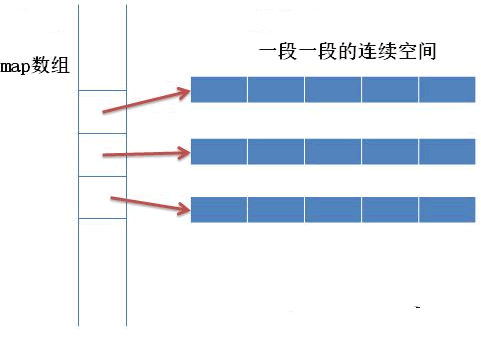

首页 > 编程笔记
C++ STL deque容器底层实现原理（深度剖析）
事实上，STL 中每个容器的特性，和它底层的实现机制密切相关，deque 自然也不例外。《C++ STL deque容器》一节中提到，deque 容器擅长在序列的头部和尾部添加或删除元素。本节将介绍 deque 容器的底层实现机制，探究其拥有此特点的原因。
想搞清楚 deque 容器的实现机制，需要先了解 deque 容器的存储结构以及 deque 容器迭代器的实现原理。
为了管理这些连续空间，deque 容器用数组（数组名假设为 map）存储着各个连续空间的首地址。也就是说，map 数组中存储的都是指针，指向那些真正用来存储数据的各个连续空间（如图 1 所示）。
通过建立 map 数组，deque 容器申请的这些分段的连续空间就能实现“整体连续”的效果。换句话说，当 deque 容器需要在头部或尾部增加存储空间时，它会申请一段新的连续空间，同时在 map 数组的开头或结尾添加指向该空间的指针，由此该空间就串接到了 deque 容器的头部或尾部。
为了实现遍历 deque 容器的功能，deque 迭代器定义了如下的结构：
借助这 4 个指针，deque 迭代器对随机访问迭代器支持的各种运算符进行了重载，能够对 deque 分段连续空间中存储的元素进行遍历。例如：
deque 容器除了维护先前讲过的 map 数组，还需要维护 start、finish 这 2 个 deque 迭代器。以下为 deque 容器的定义：
因此，deque 容器的底层实现如图 2 所示。

图 3 deque容器的底层实现
借助 start 和 finish，以及 deque 迭代器中重载的诸多运算符，就可以实现 deque 容器提供的大部分成员函数，比如：
想搞清楚 deque 容器的实现机制，需要先了解 deque 容器的存储结构以及 deque 容器迭代器的实现原理。
deque容器的存储结构
和 vector 容器采用连续的线性空间不同，deque 容器存储数据的空间是由一段一段等长的连续空间构成，各段空间之间并不一定是连续的，可以位于在内存的不同区域。为了管理这些连续空间，deque 容器用数组（数组名假设为 map）存储着各个连续空间的首地址。也就是说，map 数组中存储的都是指针，指向那些真正用来存储数据的各个连续空间（如图 1 所示）。

图 1 deque容器的底层存储机制
图 1 deque容器的底层存储机制
通过建立 map 数组，deque 容器申请的这些分段的连续空间就能实现“整体连续”的效果。换句话说，当 deque 容器需要在头部或尾部增加存储空间时，它会申请一段新的连续空间，同时在 map 数组的开头或结尾添加指向该空间的指针，由此该空间就串接到了 deque 容器的头部或尾部。
deque 容器的分段存储结构，提高了在序列两端添加或删除元素的效率，但也使该容器迭代器的底层实现变得更复杂。有读者可能会问，如果 map 数组满了怎么办？很简单，再申请一块更大的连续空间供 map 数组使用，将原有数据（很多指针）拷贝到新的 map 数组中，然后释放旧的空间。
deque容器迭代器的底层实现
由于 deque 容器底层将序列中的元素分别存储到了不同段的连续空间中，因此要想实现迭代器的功能，必须先解决如下 2 个问题：- 迭代器在遍历 deque 容器时，必须能够确认各个连续空间在 map 数组中的位置；
- 迭代器在遍历某个具体的连续空间时，必须能够判断自己是否已经处于空间的边缘位置。如果是，则一旦前进或者后退，就需要跳跃到上一个或者下一个连续空间中。
为了实现遍历 deque 容器的功能，deque 迭代器定义了如下的结构：
template<class T,...>
struct __deque_iterator{
...
T* cur;
T* first;
T* last;
map_pointer node;//map_pointer 等价于 T**
}
可以看到，迭代器内部包含 4 个指针，它们各自的作用为：
- cur：指向当前正在遍历的元素；
- first：指向当前连续空间的首地址；
- last：指向当前连续空间的末尾地址；
- node：它是一个二级指针，用于指向 map 数组中存储的指向当前连续空间的指针。
借助这 4 个指针，deque 迭代器对随机访问迭代器支持的各种运算符进行了重载，能够对 deque 分段连续空间中存储的元素进行遍历。例如：
//当迭代器处于当前连续空间边缘的位置时，如果继续遍历，就需要跳跃到其它的连续空间中，该函数可用来实现此功能
void set_node(map_pointer new_node){
node = new_node;//记录新的连续空间在 map 数组中的位置
first = *new_node; //更新 first 指针
//更新 last 指针，difference_type(buffer_size())表示每段连续空间的长度
last = first + difference_type(buffer_size());
}
//重载 * 运算符
reference operator*() const{return *cur;}
pointer operator->() const{return &(operator *());}
//重载前置 ++ 运算符
self & operator++(){
++cur;
//处理 cur 处于连续空间边缘的特殊情况
if(cur == last){
//调用该函数，将迭代器跳跃到下一个连续空间中
set_node(node+1);
//对 cur 重新赋值
cur = first;
}
return *this;
}
//重置前置 -- 运算符
self& operator--(){
//如果 cur 位于连续空间边缘，则先将迭代器跳跃到前一个连续空间中
if(cur == first){
set_node(node-1);
cur == last;
}
--cur;
return *this;
}
deque容器的底层实现
了解了 deque 容器底层存储序列的结构，以及 deque 容器迭代器的内部结构之后，接下来看看 deque 容器究竟是如何实现的。deque 容器除了维护先前讲过的 map 数组，还需要维护 start、finish 这 2 个 deque 迭代器。以下为 deque 容器的定义：
//_Alloc为内存分配器
template<class _Ty,
class _Alloc = allocator<_Ty>>
class deque{
...
protected:
iterator start;
iterator finish;
map_pointer map;
...
}
其中，start 迭代器记录着 map 数组中首个连续空间的信息，finish 迭代器记录着 map 数组中最后一个连续空间的信息。另外需要注意的是，和普通 deque 迭代器不同，start 迭代器中的 cur 指针指向的是连续空间中首个元素；而 finish 迭代器中的 cur 指针指向的是连续空间最后一个元素的下一个位置。因此，deque 容器的底层实现如图 2 所示。
图 3 deque容器的底层实现
借助 start 和 finish，以及 deque 迭代器中重载的诸多运算符，就可以实现 deque 容器提供的大部分成员函数，比如：
//begin() 成员函数
iterator begin() {return start;}
//end() 成员函数
iterator end() { return finish;}
//front() 成员函数
reference front(){return *start;}
//back() 成员函数
reference back(){
iterator tmp = finish;
--tmp;
return *tmp;
}
//size() 成员函数
size_type size() const{return finish - start;}//deque迭代器重载了 - 运算符
//enpty() 成员函数
bool empty() const{return finish == start;}
关注公众号「站长严长生」，在手机上阅读所有教程，随时随地都能学习。内含一款搜索神器，免费下载全网书籍和视频。

微信扫码关注公众号